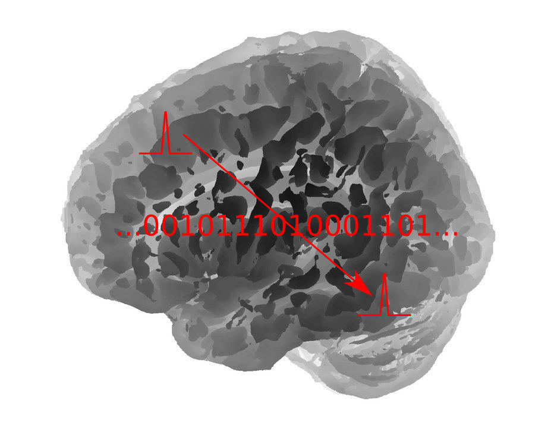

CNS*2024 Workshop on Methods of Information Theory in Computational Neuroscience

Aims and topics
Methods originally developed in Information Theory have found wide applicability in computational neuroscience. Beyond these original methods there is a need to develop novel tools and approaches that are driven by problems arising in neuroscience.
A number of researchers in computational/systems neuroscience and in information/communication theory are investigating problems of information representation and processing. While the goals are often the same, these researchers bring different perspectives and points of view to a common set of neuroscience problems. Often they participate in different fora and their interaction is limited.
The goal of the workshop is to bring some of these researchers together to discuss challenges posed by neuroscience and to exchange ideas and present their latest work.
The workshop is targeted towards computational and systems neuroscientists with interest in methods of information theory as well as information/communication theorists with interest in neuroscience.
Registration and Access
The workshop will be held as a part of the CNS*2024 in Natal, Brazil. Please see the CNS*2024 website for registration to the workshops (this is required to attend).
Organising committee
- Abdullah Makkeh, University of Göttingen, Germany abdullah.alimakkeh@uni-goettingen.de
- Michael Wibral, University of Göttingen, Germanymichael.wibral@uni-goettingen.de
- Joseph T. Lizier, The University of Sydney, Australia joseph.lizier@sydney.edu.au
- Pedro Mediano, Imperial College London, UK pedro.martinez-mediano13@imperial.ac.uk
- Marilyn Gatica -- Chair, Northeastern University London , UK marilyn.gatica@nulondon.ac.uk
Speakers
The following are invited and contributing speakers for the workshop.
Previous workshops
This workshop has been run at CNS for over two decades now -- links to the websites for the previous workshops in this series are below:
- CNS*2023 Workshop, July 18-29, 2023, Leipzig , Germany
- CNS*2022 Workshop, July 19-20, 2022, Melbourne, Australia
- CNS*2021 Workshop, July 06-07, 2021, Online!
- CNS*2020 Workshop, July 21-22, 2020, Online!
- CNS*2019 Workshop, July 16-17, 2019, Barcelona, Spain.
- CNS*2018 Workshop, July 17-18, 2018, Seattle, USA.
- CNS*2017 Workshop, July 19-20, 2017, Antwerp, Belgium.
- CNS*2016 Workshop, July 6-7, 2016, Jeju, South Korea.
- CNS*2015 Workshop, July 22-23, 2015, Prague, Czech Republic.
- CNS*2014 Workshop, July 30-31, 2014, Québec City, Canada.
- CNS*2013 Workshop, July 17-18, 2013, Paris, France.
- CNS*2012 Workshop, July 25-26, 2012, Atlanta/Decatur, GA, USA.
- CNS*2011 Workshop, July 27-28, 2011, Stockholm, Sweden.
- CNS*2010 Workshop, July 29-30, 2010, San Antonio, TX, USA.
- CNS*2009 Workshop, July 22-23, 2009, Berlin, Germany.
- CNS*2008 Workshop, July 23-24, 2008, Portland, OR, USA.
- CNS*2007 Workshop, July 11-12, 2007, Toronto, Canada.
- CNS*2006 Workshop, June 19-20, 2006, Edinburgh, U.K.